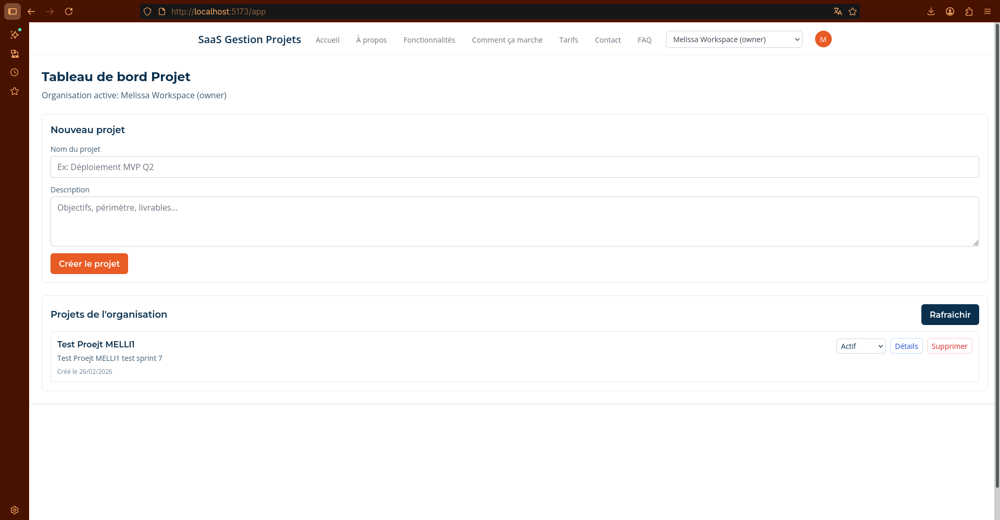
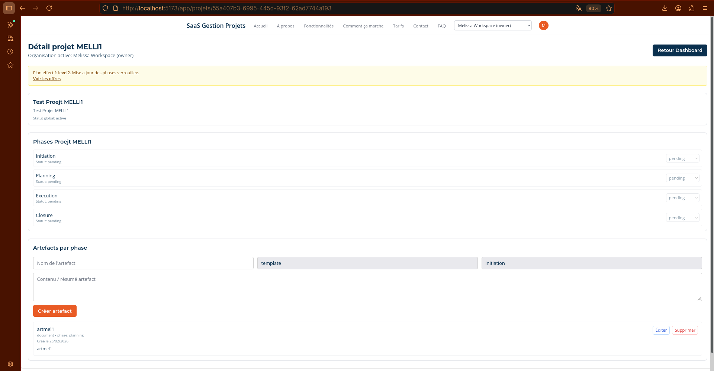
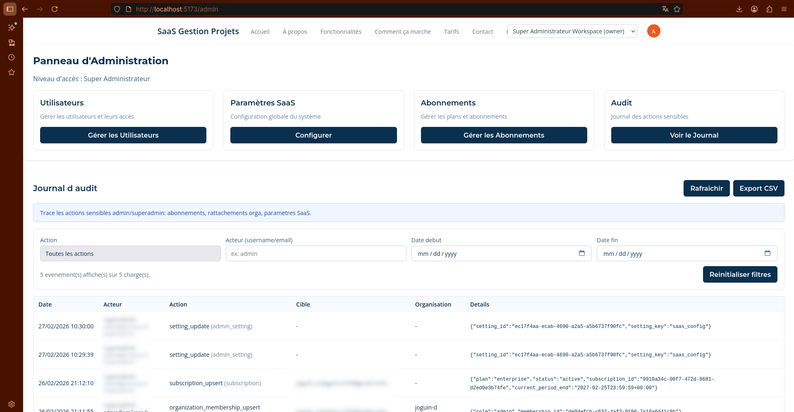
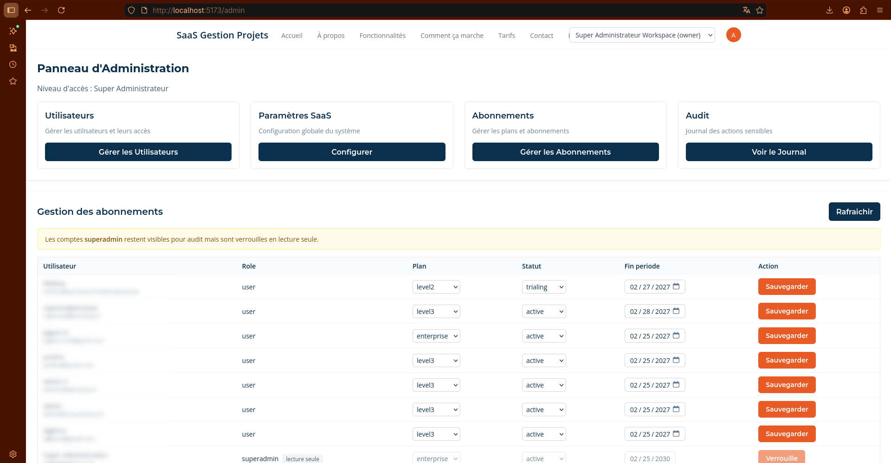
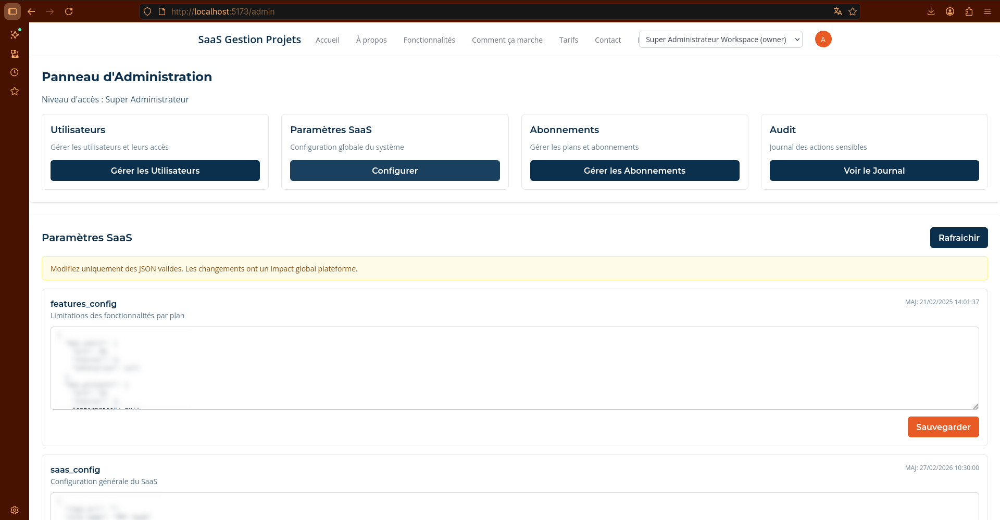
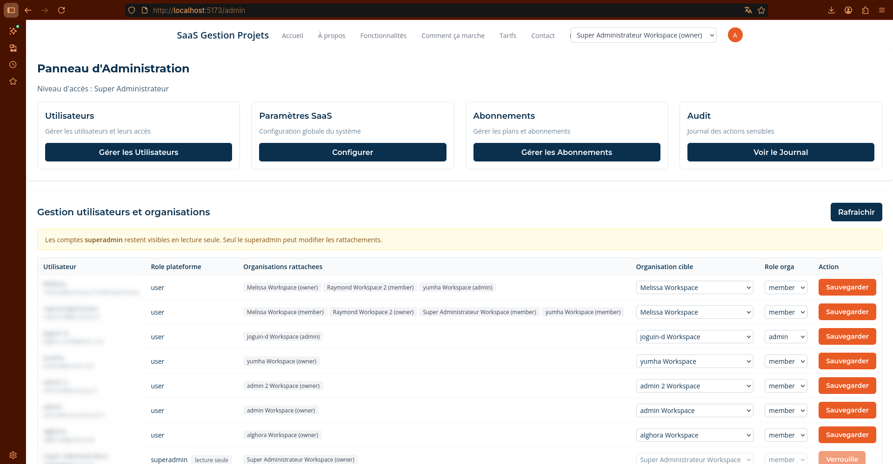

🚀 project management Multi-Tenant SaaS Platform (Prototype)
🎯 Context & challenge
This project aims to transform a project-management business logic into an operational SaaS platform: authentication, role management, business data, user journeys, and an operations framework.
The challenge was to combine execution speed (demonstrable MVP) with technical robustness to prepare an industrialized V1.
🖼 Screenshots
Demo deployment in progress








🧪 Distinctive use case positioning
The project was used as a full-scale case to test digital project steering with a hybrid team model: human steering plus execution assisted by specialized AI agents.
- Prototyping and iterations on bolt.new and StackBlitz
- Development, debugging, and integration in VS Code
- Versioning, branching, and governance via GitHub
- Operational validation in local environment, then online demo preparation
This case demonstrates end-to-end orchestration, beyond code generation alone.
🧭 Preliminary phases (before technical audit)
1. Initial documentation framing
- Consolidation of initialization documents (architecture, directives, business model, Git workflow)
- Alignment with project management methodology to structure project governance
- Definition of an incremental trajectory: MVP then V1
2. Target architecture vision
- Modular multi-tenant SaaS architecture (1 tenant = 1 organization), API-first
- Planned security baseline: Auth, RBAC, RLS, data isolation
- Preparation for extensibility (modules, documents, future integrations)
3. Functional and business framing
- Formalization of priority user journeys
- Preparation of a tiered subscription model (Trial, Level 1, 2, 3)
- Explicit mapping between commercial offer and activable features
4. Delivery governance
- Target Git workflow: main / develop / feature / release / hotfix
- Iteration organization and validation criteria
- Quality/documentation baseline for progressive industrialization
🛠 Recovery phase (audit, stabilization, return to green)
- Technical-functional audit of the MVP and comparison against the documentary target
- Fix of critical blockers (auth, build, migrations, local run)
- Supabase restoration on a new project and flow revalidation
- Setup of minimal CI (lint/build), DB check script, and operations runbook
🏗 Technical anchoring (implemented version)
- Front-end: React + Vite + TypeScript + Tailwind CSS
- Backend/Data/Auth: Supabase (PostgreSQL, Auth, RLS, Storage)
- Access control: user/admin/superadmin roles, RLS policies
- Quality: lint, build, post-migration checks, branching workflow
- Versioned V1 roadmap with explicit architecture decisions
🤖 AI-assisted project organization
AI agents were engaged by specialty, under BA/Project Manager steering:
- Framing: structuring requirements and priorities
- Architecture: consistency of data schema, auth, and security
- Development: targeted fixes and implementations
- QA: validation of critical journeys (signup/login/roles)
- Ops: CI, control scripts, runbook
👤 BA / Digital Project Manager role
- Defined product direction and priority arbitrations
- Translated business needs into an actionable backlog
- Orchestrated AI contributions and controlled global consistency
- Steered incidents (repo, branches, database, auth, release)
- Validated deliverables and prepared V1 steps
🧩 Project approach (summary)
1. Framing
- Analysis of needs and usage hypotheses
- Definition of MVP scope and acceptance criteria
2. Incremental delivery
- Fast AI-assisted iterations with consistency reviews
- Priority treatment of technical risks
3. Stabilization
- Audit, fixes, run tests, DB/auth validation
- Implementation of a continuously usable quality framework
4. V1 preparation
- Sprint-based development plan
- Strategic decision: V1 on current stack, future migration based on criteria
📈 Deliverables and outcomes
- Functional and demonstrable SaaS MVP
- Stabilized auth (email + username) and synchronized profiles
- Reliable SQL migrations + profile-creation trigger
- Operational CI pipeline (lint/build)
- Post-migration DB verification script
- Restore/check runbook + versioned V1 development plan
✅ Skills demonstrated for the role
- End-to-end digital project steering
- Multi-tool management and AI-team coordination by roles
- Resolution of complex incidents while maintaining delivery
- Ability to connect product strategy, technical execution, and quality
- Clear communication for technical and non-technical stakeholders
🎬 Demo Video
Open live demoShort looping video
In progress
🔐 Source Code
POC/MVP assets and demonstration elements are available on request: user journeys, business logic, control scripts, Git governance, and project steering deliverables.